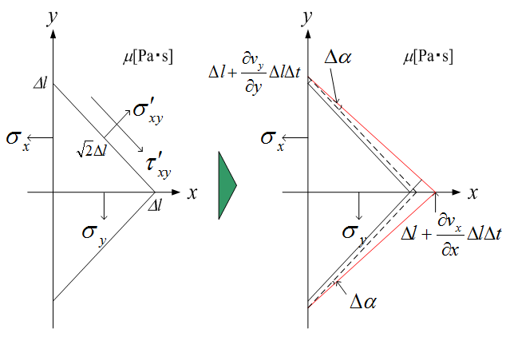

広告
応力の垂直成分
応力テンソルの垂直応力成分を導出します。下図から応力の収支を考えます。

Dt経過後の角度 Daは次式となります。
\[
\begin{aligned}
\Delta\alpha&\simeq\sin\Delta\alpha\\
&=\frac{
\frac{1}{\sqrt{2}}\frac{\partial v_x}{\partial x}\Delta l\Delta t
-\frac{1}{\sqrt{2}}\frac{\partial v_y}{\partial y}\Delta l\Delta t
}{
\frac{1}{\sqrt{2}}\frac{\partial v_y}{\partial y}\Delta l\Delta t
+\sqrt{2}\Delta l
}\\
&=\frac{
\frac{\partial v_x}{\partial x}-\frac{\partial v_y}{\partial y}
}{
\frac{\partial v_y}{\partial y}+\frac{2}{\Delta t}
}
\end{aligned}
\]
剪断速度g[1/s]は、次式となります。
\[
\begin{aligned}
\gamma
&=\lim_{\Delta t\to0}\frac{2\Delta\alpha}{\Delta t}\\
&=\lim_{\Delta t\to0}
2\frac{
\frac{\partial v_x}{\partial x}-\frac{\partial v_y}{\partial y}
}{
\frac{\partial v_y}{\partial y}\Delta t+2
}\\
&=\frac{\partial v_x}{\partial x}-\frac{\partial v_y}{\partial y}
\end{aligned}
\]
従って、剪断応力t ’xy[N/m2]は次式となります。
\[
\begin{aligned}
\tau'_{xy}&=\mu\gamma\\
&=\mu\left(\frac{\partial v_x}{\partial x}-\frac{\partial v_y}{\partial y}\right)
\end{aligned}
\]
また、応力の釣り合いから
\[
\frac{1}{\sqrt{2}}\Delta l\,\sigma_x
-\frac{1}{\sqrt{2}}\Delta l\,\sigma_y
-\sqrt{2}\Delta l\,\tau'_{xy}=0
\]
より
\[
\sigma_x-\sigma_y-2\tau'_{xy}=0
\]
従って、
\[
\begin{aligned}
\sigma_x-\sigma_y&=2\tau'_{xy}\\
&=2\mu\left(\frac{\partial v_x}{\partial x}-\frac{\partial v_y}{\partial y}\right)
\end{aligned}
\]
同様に
\[
\begin{aligned}
\sigma_y-\sigma_z&=2\mu\left(\frac{\partial v_y}{\partial y}-\frac{\partial v_z}{\partial z}\right)\\
\sigma_z-\sigma_x&=2\mu\left(\frac{\partial v_z}{\partial z}-\frac{\partial v_x}{\partial x}\right)
\end{aligned}
\]
sx , s y , s z は垂直応力なので次式で表されます。
\[
\sigma_x+\sigma_y+\sigma_z
=\frac{p_x+p_y+p_z}{3}
\]
従って、これらを解くと次式が導出されます。
\[
\begin{aligned}
\sigma_x&=-p_x+2\mu\frac{\partial v_x}{\partial x}
-\frac{2}{3}\mu(\nabla\cdot v)\\
\sigma_y&=-p_y+2\mu\frac{\partial v_y}{\partial y}
-\frac{2}{3}\mu(\nabla\cdot v)\\
\sigma_z&=-p_z+2\mu\frac{\partial v_z}{\partial z}
-\frac{2}{3}\mu(\nabla\cdot v)
\end{aligned}
\]
| prev | | | up | | | next |